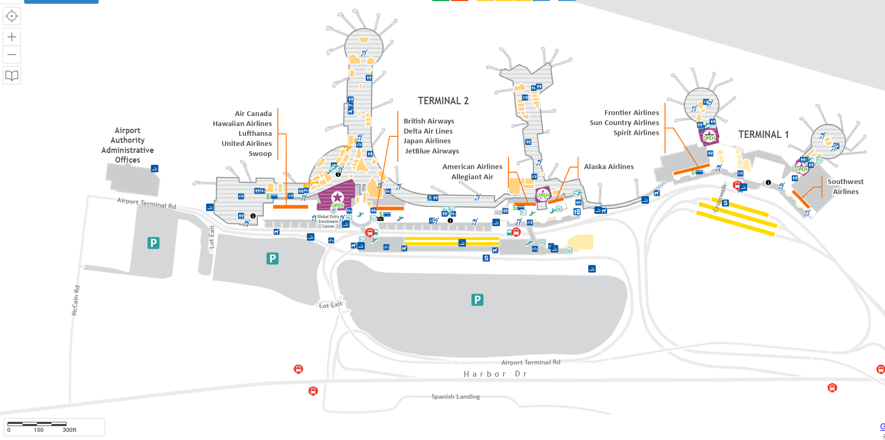

Обзор
- Веб-сайт международного аэропорта Сан-Диего
- Терминал 1 имеет один этаж.
-
Терминал 2 имеет два этажа.
- Первый этаж — зона выдачи багажа/прибытия.
-
Второй этаж — TSA/охрана и вылеты. Он разделен на два раздела, и чтобы попасть из одного раздела в другой, необходимо либо
- спуститься вниз
- выйти на второй этаж
-
Мы рекомендуем заходить в аэропорт через Терминал 2.
Если вы стоите лицом к аэропорту:- Поверните налево, чтобы добраться до: United, JetBlue, Delta.
- Идите направо и попадете: Аляска, Америка.
- Спуститесь вниз и пройдите направо (около 10 минут), чтобы добраться до: терминала 1 (Frontier, Spirit, Southwest).
- Билет на самолет лучше покупать онлайн. Лишь некоторые авиакомпании позволяют купить билет у кассы, и обычно за это взимается комиссия. Билетные кассы не принимают наличные.
- Wi-Fi в аэропорту сильнее в терминале 2, рядом с эскалатором. Зайдите туда, чтобы улучшить подключение к Интернету при бронировании авиабилетов.
Карты международного аэропорта Сан-Диего
Нажмите, чтобы просмотреть интерактивную карту международного аэропорта Сан-Диего
Нажмите, чтобы просмотреть статическую карту 1 международного аэропорта Сан-Диего

Нажмите, чтобы просмотреть статическую карту 2 международного аэропорта Сан-Диего
Волонтёры
- Волонтёры могут приехать в аэропорт утром (с 8:00 до 11:00) или вечером (с 17:00 до 22:00). Они пройдут через весь аэропорт
- Волонтёрам будет предоставлена бесплатная еда и стаканчики, которые можно будет наполнить водой в любом фонтанчике аэропорта.
- Волонтёрам также может быть предоставлена бесплатная одежда, предметы гигиены (зубные щетки, влажные салфетки, менструальные средства, подгузники), одеяла.
- Ищите людей с катящейся повозкой или тележкой, они могут быть в синих или зеленых жилетах.
- Волонтёры могут ответить на такие вопросы, как: где найти ваш самолёт, как получить посадочный талон/билет, когда прибывает ваш рейс.
- Вы останетесь в аэропорту на ночь? Пожалуйста дай нам знать. Возможно, у нас есть место, где ты можешь переночевать.
- Вы чувствуете себя больным или нуждаетесь в медицинской помощи? Расскажите волонтеру, и он постарается вам помочь.
- Ваш рейс отменили, и вам помогли католическая благотворительная организация или еврейская семейная служба? Мы можем соединить вас с CC или JFS
Ванные комнаты
- Ванные комнаты расположены по всему аэропорту.
- Не смывайте влажные салфетки в унитаз
Электрические розетки
- Торговые точки есть по всему аэропорту. На первом этаже больше розеток.
- Вы можете спать на стульях на первом этаже.
Магазины и рестораны в аэропорту
- Большинство магазинов и ресторанов закрываются к 20:00.
- Jack in the Box в Терминале 1 — ресторан, который закрывается последним (20:00).
- В аэропорту не продаются сигареты
- Сим-карту можно купить в магазине в Терминале 1 возле Jack in the Box.
Деньги
- В аэропорту нет обмена валюты
-
В аэропорту нет Western Union. Чтобы добраться до Western Union, вам придется сесть на автобус до вокзала Старого города.
- Чтобы узнать больше, посетите страницу вокзала Старого города .
-
Есть автоматы под названием «Ready Card». Они обменяют ваши наличные на предоплаченную дебетовую карту Mastercard за комиссию в размере 6 долларов США.
- Всего имеется шесть станций готовности, и они расположены рядом с билетными кассами. Имея предоплаченную дебетовую карту Mastercard, вы можете приобрести билет на самолет в кассах или через Интернет.
-
Инструкции по использованию машины Ready Station:
- Найдите станцию и коснитесь экрана, чтобы начать.
- На экране появится важное информационное сообщение, нажмите «Принять», чтобы продолжить. На предоплаченную дебетовую карту можно внести максимум 1000 долларов США.
- Нажмите «КУПИТЬ», чтобы приобрести предоплаченную дебетовую карту и внести наличные.
- Вставьте нужную сумму наличных в автомат. Если вы введете 100 долларов, баланс карты составит 94 доллара.
- Закончив внесение наличных, нажмите кнопку «Готово» на экране.
-
Убедитесь, что сумма на карте верна.
- Если сумма верна, нажмите на кнопку «ГОТОВО – ВЫДАВАТЬ КАРТУ».
- Если вы хотите добавить больше денег, нажмите кнопку «ДОБАВИТЬ БОЛЬШЕ ДЕНЕГ».
- Транзакция завершена. Возьмите карту.
- Банкоматы есть в обоих терминалах.
- Авиакассы не принимают наличные
Приют
Если у вас нет авиабилетов и вам нужно жилье, ближайший приют в Сан-Диего — дневной центр Сан-Диего (Нил Гуд) по адресу 299 17th Street.
- Дневной центр Сан-Диего (Нил Гуд) открыт с понедельника по пятницу с 7:00 до 15:00.
- Количество мест ограничено — постарайтесь прийти к 6 утра, чтобы занять место.
- В дневном центре Сан-Диего (Нил Гуд) есть туалеты, прачечная и зоны для зарядки мобильных телефонов.
Как добраться до дневного центра Сан-Диего (Нил Гуд) из аэропорта
- Выйти на улицу к автобусной остановке
- Найти автобус 992
- Сядьте на автобус до 11-й авеню и Бродвея.
- Дойти до остановки Broadway & Park Boulevard.
- Сядьте на автобус 12.
- Выходите на Империал-авеню и 16-й авеню.
- Очередь на 17-й авеню, 299.
Доступный Мотель
Если вы можете позволить себе около 120 долларов за ночь, вы можете рассмотреть мотель EZ 8. Чтобы узнать больше, посетите страницу вокзала Старого города .
АСП/Безопасность
На всех лиц, намеревающихся сесть на рейс в пределах США, распространяются процессы и правила TSA.
- Полезные страницы на сайте TSA
- Нельзя проносить через охрану большое количество жидкости (не более 88 миллилитров).
- Вы можете принести пустые бутылки с водой.
- Если у вас действующий паспорт, вам нужны только билет на самолет/посадочный талон и паспорт.
- Если у вас нет паспорта, вам понадобится билет на самолет/посадочный талон и иммиграционные документы (от CBP или ICE).
- Возможно, вам придется снять обувь, куртку, ремень или шапку.
- Стойте в очереди на охрану минимум за 2 часа до вылета.